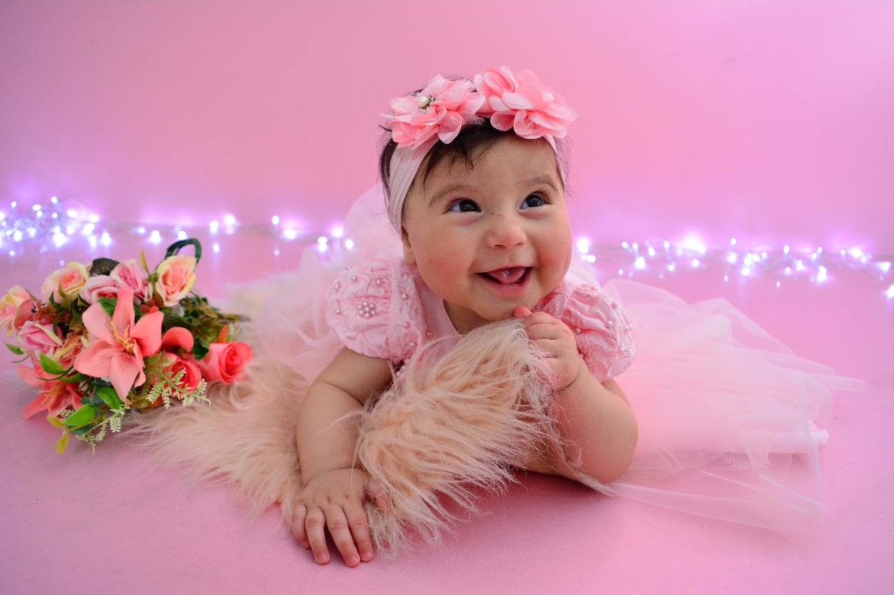
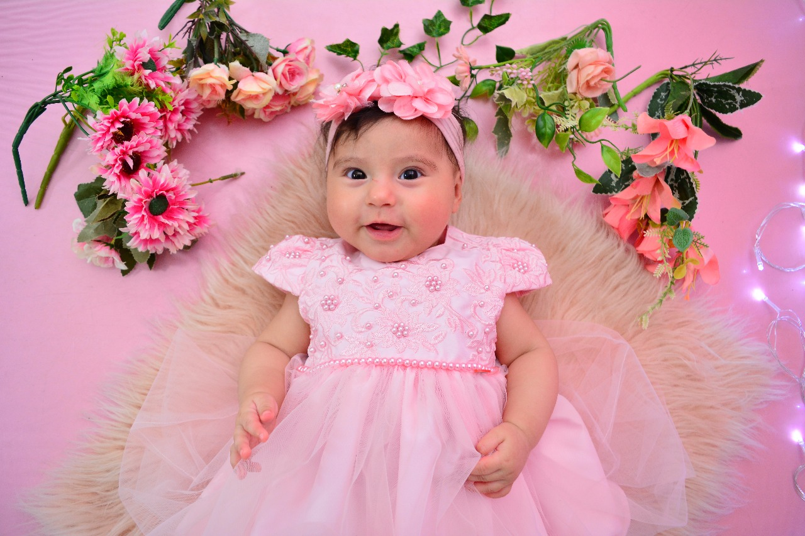
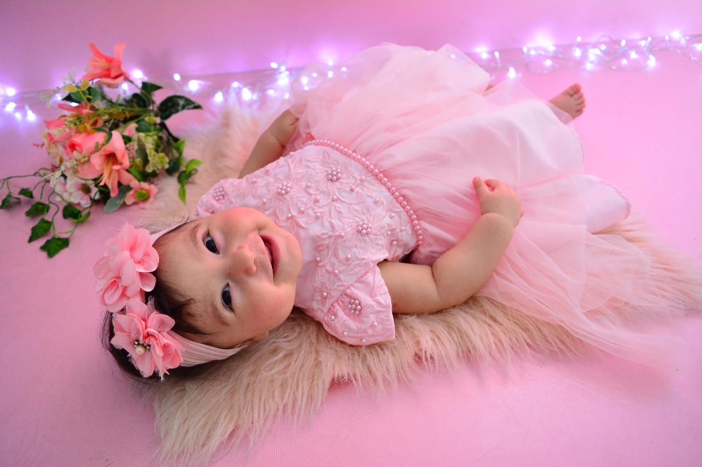

Batizado da Helena 🌹

Você é nosso convidado especial!
🗓 04/10/2025 • ⛪ Paróquia São Luís Gonzaga • 🕥 10:30
Queridos parentes e amigos, convidamos e contamos com sua preseça neste momento especial. Por isso, pedimos que confirmem sua presença no batizado de Helena e no almoço após a cerimônia, clicando no link abaixo:
📍 Local da cerimônia
Paróquia São Luís Gonzaga
R. Cônego José Leão Hartman, 82 - Centro, Canoas - RS, 92310-400
🍽️ Local do Almoço
Pizzaria Casseroles
R. Siqueira Campos, 382 - Centro, Canoas - RS, 92010-230
"
📸 Galeria

